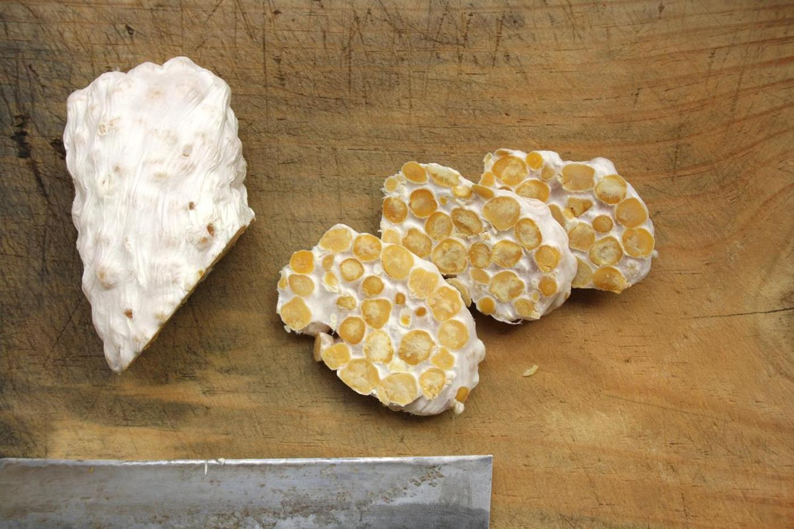
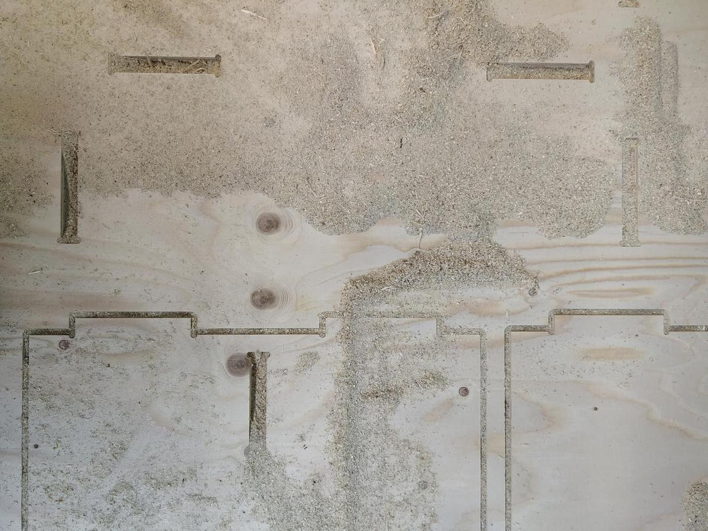
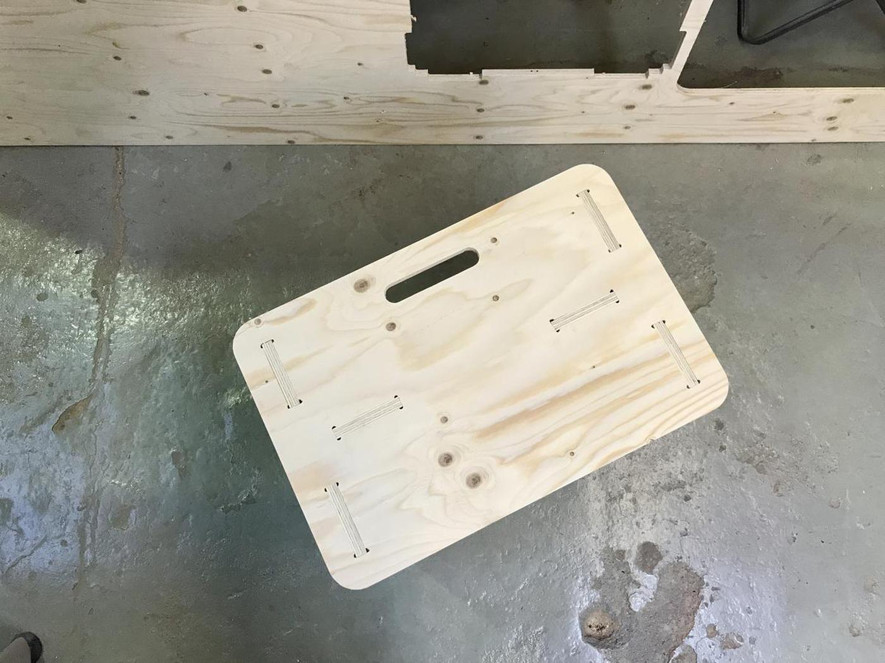
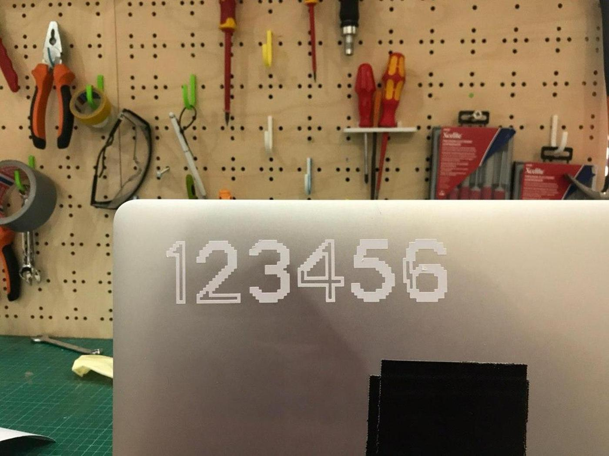
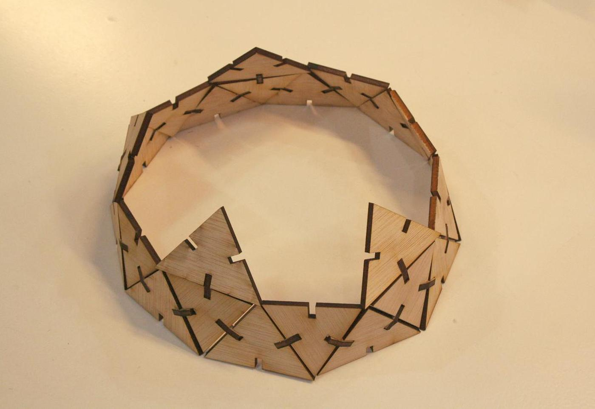
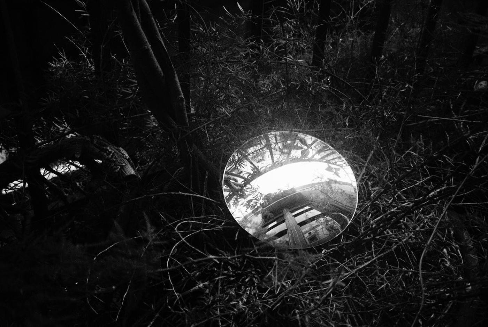

Flux
-
![['Focus404 ↝ Alien Jazz']](medias/focus404-alien-jazz-alien-jazz-cover.jpg)
Seen in: Focus404 ↝ Alien Jazz -
 Seen in: Tempeh collection -
![['Electronics']](medias/incubator-v0-1-electronics-incubator-traces.jpg)
Seen in: Electronics -
 Seen in: Fab stool/bench/table -
 Seen in: Fab stool/bench/table -
![['Fab stool/bench/table']](medias/computer-controlled-machining-fab-stool-bench-table-stool-3.jpg)
Seen in: Fab stool/bench/table -
![['Making of the structure']](medias/green-observatory-structure-design-10.png)
Seen in: Making of the structure -
![['Making of the inflatable part']](medias/green-observatory-inflatable-inflatable-process-16.jpg)
Seen in: Making of the inflatable part -
![['Making of the inflatable part']](medias/green-observatory-inflatable-inflatable-result.jpg)
Seen in: Making of the inflatable part -
![['Electronics: Output']](medias/green-observatory-output-design-05.png)
Seen in: Electronics: Output -
![['Electronics: Output']](medias/green-observatory-output-design-06.png)
Seen in: Electronics: Output -
![['Electronics: Input']](medias/green-observatory-input-prototype.jpg)
Seen in: Electronics: Input -
![['Electronics: Input']](medias/green-observatory-input-input-01.jpg)
Seen in: Electronics: Input -
![['Electronics: Input']](medias/green-observatory-input-input-06.jpg)
Seen in: Electronics: Input -
![['Electronics: Input']](medias/green-observatory-input-final-result.png)
Seen in: Electronics: Input -
![['Multiple oloids']](medias/molding-casting-multiple-oloids-oloid-model.png)
Seen in: Multiple oloids -
![['Multiple oloids']](medias/molding-casting-multiple-oloids-wax-release-2.jpg)
Seen in: Multiple oloids -
![['Multiple oloids']](medias/molding-casting-multiple-oloids-pine-resin-3.jpg)
Seen in: Multiple oloids -
![['Multiple oloids']](medias/molding-casting-multiple-oloids-pine-resin-8.jpg)
Seen in: Multiple oloids -
![['Oloid shape']](medias/3D-scanning-printing-oloid-shape-oloid-result-1.jpg)
Seen in: Oloid shape -
![['Making an in-circuit programmer']](medias/electronics-production-in-circuit-programmer-soldering-macro.jpg)
Seen in: Making an in-circuit programmer -
 Seen in: The most common password ever -
 Seen in: Geodesic dome -
![['Principles and practices']](medias/principles-and-practices-first-sketch.jpg)
Seen in: Principles and practices -
![['Ilford XP2 - 4449']](medias/ilford-xp2-4449-4449-11.jpg)
Seen in: Ilford XP2 - 4449 -
 Seen in: Ilford XP2 - 4449 -
Seen in: Ilford XP2 - 4449